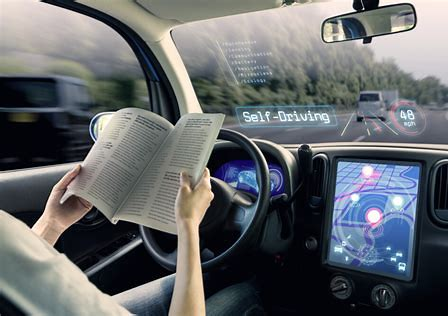
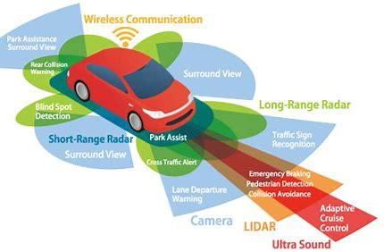
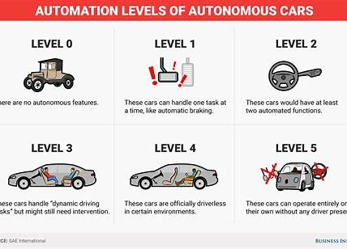

AI About Self-driving Vehicles
A self-driving car (sometimes called an autonomous car or driverless car) is a vehicle that uses a combination of sensors, cameras, radar and artificial intelligence (AI) to travel between destinations without a human operator.

How self-driving cars work?
AI technologies power self-driving car systems. Developers of self-driving cars use vast amounts of data from image recognition systems, along with machine learning and neural networks, to build systems that can drive autonomously.

Level 1: An advanced driver assistance system (ADAS) aids the human driver with steering, braking or accelerating, though not simultaneously. An ADAS includes rearview cameras and features like a vibrating seat warning to alert drivers when they drift out of the traveling lane.
Level 2: An ADAS that can steer and either brake or accelerate simultaneously while the driver remains fully aware behind the wheel and continues to act as the driver.
Level 3: An automated driving system (ADS) can perform all driving tasks under certain circumstances, such as parking the car. In these circumstances, the human driver must be ready to retake control and is still required to be the main driver of the vehicle.
Level 4: An ADS can perform all driving tasks and monitor the driving environment in certain circumstances. In those circumstances, the ADS is reliable enough that the human driver needn't pay attention.
Level 5: The vehicle's ADS acts as a virtual chauffeur and does all the driving in all circumstances. The human occupants are passengers and are never expected to drive the vehicle.
